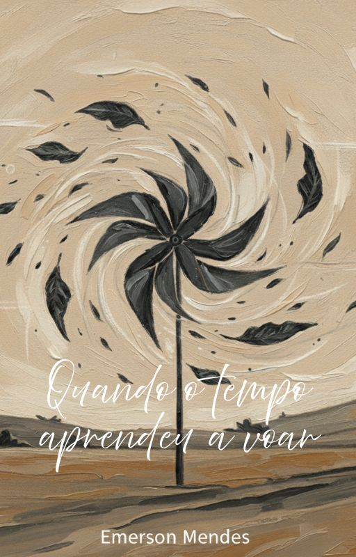

Emerson Mendes
Quando o tempo aprendeu a voar
um livro sobre aquilo que o tempo leva, transforma e deixa girando dentro da gente.
FRAGMENTOS
“Que estas palavras sejam o cata-vento a girar a sua lembrança.”

edição digital em PDF
Levar este livro comigo
Receba a edição digital de Quando o tempo aprendeu a voar.
R$ 9,90
Comprar agora
Você será redirecionado para o hotmart!